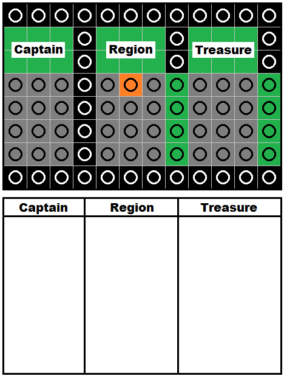
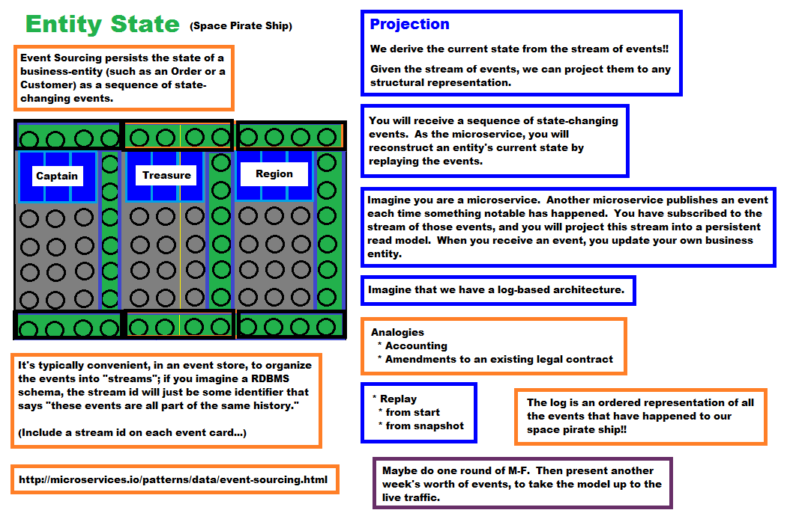

Event Sourcing Game
Show photo with different attributes of entity.
Round 1
Distribute Round 1 cards
- Stream ID: 2112 (red index card), Stardate: 4 (April), The bounty hunter landed his spaceship on the planet Gold VII. He found 4 golden nuggets, Hint: Treasure: Add 4 golden nuggets, Region: Gold VII
- Stream ID: 2187, Stardate: 1 (January), Spiderman finally graduated from the asteroid mining academy and was assigned to pilot the asteroid mining spaceship in a hangar at Mos Eisley Spaceport, Hint: Captain: Spiderman, Region: M.E.S.
- Stream ID: 2187, Stardate: 2 (February), Spiderman brought the spaceship and crew to the Alpha Centuri Asteroid Field, Hint: Region: A.C.A.F.
- Stream ID: 2187, Stardate: 3 (March), The crew launched a drilling pod and mined 6 rubies from one of the asteroids, Hint: Treasure: Add 6 rubies
- Stream ID: 2187, Stardate: 4 (April), Spiderman flew the spaceship and crew to the Diamond Quasar Spaceport. On the trip through hyperspace, two of the rubies slipped out of a leaky airlock and were lost in deep space!!, Hint: Region: D.Q.S., Treasure: Subtract 2 rubies
- Stream ID: 2187, Stardate: 5 (May), One crew member named Nerf Herder ventured out, found a space jewel trader, and sold 2 rubies to earn 100 space credits for the crew. Hint: Treasure: Subtract 2 rubies, Add a bill worth 100 space credits
- Stream ID: 2187, Stardate: 5 (May), One crew member named Nerf Herder ventured out, found a space jewel trader, and sold 2 rubies to earn 100 space credits for the crew. Hint: Treasure: Subtract 2 rubies, Add a bill worth 100 space credits
- Stream ID: 2187, Stardate: 5 (May), One crew member named Nerf Herder ventured out, found a space jewel trader, and sold 2 rubies to earn 100 space credits for the crew. Hint: Treasure: Subtract 2 rubies, Add a bill worth 100 space credits
- Stream ID: 2187, Stardate: 6 (June), Spiderman flew the spaceship and crew to the Elven town Rivendell in the Misty Mountains of Middle-earth. Immediately after landing, the ship was commandeered by an elf battle princess, and Spiderman was imprisoned, Hint: Captain: Elf battle princess, Region: R
- Stream ID: 2187, Stardate: 7 (July), The elves of Rivendell drew their arrows and "encouraged" the crew to pay a spaceship launch fee of 2 rubies, and the Elf battle princess flew the spaceship and crew to the Diamond Quasar Spaceport., Hint: Region: D.Q.S, Treasure: Subtract 2 rubies
- Stream ID: 2187, Stardate: 8 (August), At the spaceport, the Elf battle princess found a space jewel trader and used the crew's treasure to purchase 4 purple amethyst ore for 99 space credits., Hint: Treasure: Add 4 purple amethyst ore, Subtract a bill worth 100 space credits, Add a bill worth 1 space credit (solid green rectangle)
- Stream ID: 2187, Stardate: 9 (September), The Elf battle princess flew the spaceship and crew to the Alpha Centuri Asteroid Field. She expertly controlled the drilling pod to extract 8 rubies from the asteroid., Hint: Treasure: Add 8 rubies, Region: A.C.A.F.
- Stream ID: 2187, Stardate: 10 (October), After leaving the asteroid field, 1 amethyst ore and 1 ruby was sucked into space due to the leaky airlock. The Elf battle princess quickly flew to the Mos Eisley Spaceport to fix the leaky airlock., Hint: Treasure: Subtract 1 amethyst ore, Subtract 1 ruby, Region: M.E.S.
- Stream ID: 2187, Stardate: 11 (November), Unfortunately, for parts and labor, the Mos Eisley Spaceport mechanic droids charged the crew 500 space credits!! They agreed to accept 2 amethyst ore and 3 rubies as payment., Hint: Treasure: Subtract 2 amethyst ore, Subtract 3 rubies.
- Stream ID: 2187, Stardate: 12 (December), The Elf battle princess flew the spaceship and crew back to her home in Rivendell. She left the spaceship, unlocked Spiderman's prison cell, and then said, "This sword I carry is named Glamdring. It was made by High-elves in Gondolin for the Goblin-wars. Keep it!", Hint: Captain: Spiderman, Treasure: Add 1 elf sword, Region: Rivendell
Round 2
Distribute Round 2 cards. Show snapshot on screen. (Include text description of state.)
State: Captain: Spiderman, Region: Alpha Centuri Asteroid Field, Treasure: 4 rubies, 1 Glamdring sword
- Stream ID: 2099, Stardate: 5 (May), Captain Spiderman flew the spaceship and crew to Rivendell to get the Glamdring sword sharpened. The crew was required to pay a 2-ruby landing surcharge with a 1-ruby processing fee, along with a 1-ruby Rivendell city tax., Hint: Captain: Spiderman, Treasure: Subtract 4 rubies, Region: Rivendell
- Stream ID: 2099, Stardate: 6 (June), Captain Spiderman flew the spaceship and crew back to the Alpha Centuri Asteroid Field and happily mined 5 rubies., Hint: Captain: Spiderman, Treasure: Add 5 rubies, Region: A.C.A.F
- Stream ID: 2099, Stardate: 7 (July), Spiderman flew the spaceship and crew to the Diamond Quasar Spaceport. A crew member named Atreyu left the ship and found Hiro P -- the revered spaceship modder, pizza deliverator, and freelance hacker. Atreyu bought an "automatic captain module" for 4 rubies., Hint: Treasure: Subtract 4 rubies, Region: D.Q.S
- Stream ID: 2099, Stardate: 8 (Aug), Atreyu installed the "automatic captain module" and booted it up. Spiderman left the ship's bridge and started relaxing in the warm bacta tank., Hint: Captain: None!!
- Stream ID: 2099, Stardate: 9 (Sep), Due to a bug, the "automatic captain module" flew the ship and crew dangerously close to a black hole! The gravity plus relativity made the ship jump forward in time to November!! The ship finally escaped and flew to Mos Eisley Spaceport. Hint: Region: M.E.S.
- Stream ID: 2099, Stardate: 11 (Nov), Spiderman and the crew ripped out the "automatic captain module" and pawned it for $100. Spiderman took control of the ship again. Hint: Captain: Spiderman, Treasure: Add $100 bill
- Stream ID: 2099, Stardate: 12 (Dec), Captain Spiderman flew the ship and crew to the Diamond Quasar Spaceport. A crew member named Y.T. found a weapons shop and traded the Glamdring sword for 4 amethyst ore. Hint: Treasure: Add 4 amethyst ore, Region: D.Q.S.
Labels
Game Sheet

Additional Notes
